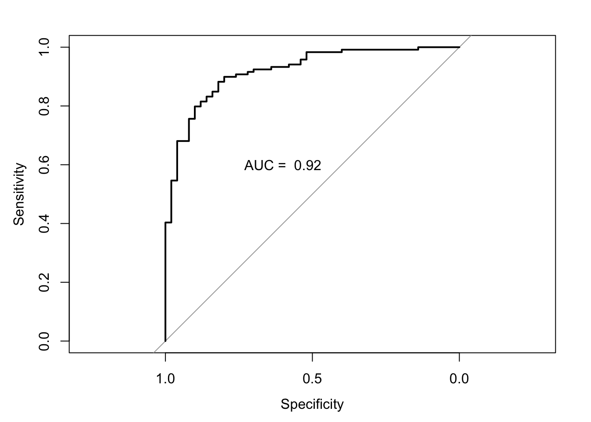
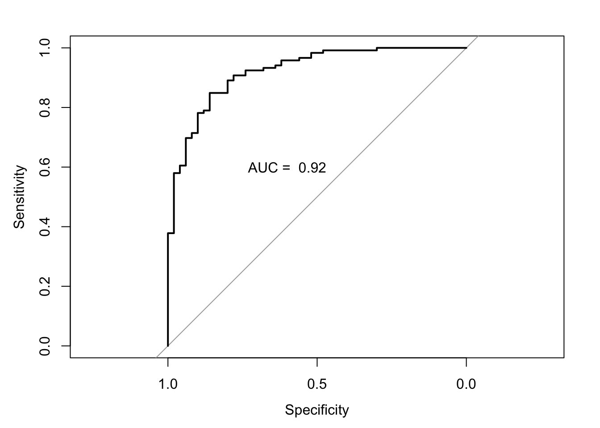

3 Logistic regression
3.1 Introduction
You should also be familiar with logistic regression but not necessarily as a classification method. In this section, we will see how this model can be used to make predictions for categorical outcomes. Like the linear model, there will be several aspects, such as hypothesis testing, that we will not discussed in detail.
3.2 Readings
Read the following chapters of An introduction to statistical learning:
- 4.2 Why not Linear Regression?
- 4.3 Logistic Regression
- Read about the Confusion Matrix and ROC curve in the subchapter 4.4.2
3.3 Practical session
Task - Logistic regression
With the bmd.csv dataset, let’s fit a logistic regression model to predict fracture, using AGE, SEX, BMI and BMD as main effects.
#libraries that we will need
library(pROC) #ROC curve
set.seed(1974) #fix the random generator seed
#read the data
bmd.data <-
read.csv("https://www.dropbox.com/s/c6mhgatkotuze8o/bmd.csv?dl=1",
stringsAsFactors = TRUE)
bmd.data$bmi <- bmd.data$weight_kg / (bmd.data$height_cm/100)^2#Fits a logistic model with fixed effects only
model1.fracture <- glm(fracture=="fracture" ~ age + sex + bmi + bmd,
family=binomial, data = bmd.data)
summary(model1.fracture)##
## Call:
## glm(formula = fracture == "fracture" ~ age + sex + bmi + bmd,
## family = binomial, data = bmd.data)
##
## Coefficients:
## Estimate Std. Error z value Pr(>|z|)
## (Intercept) 9.79488 2.69720 3.631 0.000282 ***
## age 0.01844 0.02094 0.881 0.378540
## sexM 0.84599 0.51249 1.651 0.098792 .
## bmi -0.05131 0.06013 -0.853 0.393537
## bmd -15.11747 2.80337 -5.393 6.94e-08 ***
## ---
## Signif. codes: 0 '***' 0.001 '**' 0.01 '*' 0.05 '.' 0.1 ' ' 1
##
## (Dispersion parameter for binomial family taken to be 1)
##
## Null deviance: 205.27 on 168 degrees of freedom
## Residual deviance: 110.86 on 164 degrees of freedom
## AIC: 120.86
##
## Number of Fisher Scoring iterations: 6We will use a Bayes classifier threshold (pred prob <.5) to classify each patient and then check the misclassifications using the confusion matrix.
#for model1
model1.fracture.pred <- predict(model1.fracture, #probabilities
type="response") #predicted by the model
#if prob>.5 returns TRUE (fracture)
model1.fracture.class <- model1.fracture.pred > .5
#now build the confusion matrix
table(model1.fracture.class, bmd.data$fracture) ##
## model1.fracture.class fracture no fracture
## FALSE 15 110
## TRUE 35 9So, from the table above you can see that based on the cut-off for the predictive probability of 0.5, the model predicted 35 out of the 50 fractures. And it predicted 110 out of the 119 no fractures.
Let’s now plot the ROC and calculate the area under the curve. There are several packages in R to do this; we will be using the library pROC.
auc.model1.fracture <- roc(fracture ~ model1.fracture.pred, #using the pred prob
data = bmd.data) #from the model## Setting levels: control = fracture, case = no fracture## Setting direction: controls > cases##
## Call:
## roc.formula(formula = fracture ~ model1.fracture.pred, data = bmd.data)
##
## Data: model1.fracture.pred in 50 controls (fracture fracture) > 119 cases (fracture no fracture).
## Area under the curve: 0.9195
TRY IT YOURSELF: 1) Fit a similar model to model1.fracture but add a quadratic effect for age, i.e., I(age^2) and compare the AIC of both models.
See the solution code
- Compute the classification error for the Bayes classifier using the confusion matrix.
See the solution code
#Produce the confusion matrices for the models fitted
model2.fracture.pred <- predict(model2.fracture, #probabilities predicted
type="response") #by the model
#if prob>.5 returns TRUE (fracture)
model2.fracture.class <- model2.fracture.pred >.5
#confusion matrix
table(model2.fracture.class, bmd.data$fracture)
- Plot the ROC curve
See the solution code
#ROC
#using the pred prob from the model
auc.model2.fracture <- roc(fracture ~ model2.fracture.pred,
data = bmd.data) ## Setting levels: control = fracture, case = no fracture## Setting direction: controls > cases auc.model2.fracture
plot(auc.model2.fracture)
text(0.6,.6, paste("AUC = ", round(auc.model2.fracture$auc,2)))
3.4 Exercises
The dataset bdiag.csv, included several imaging details from patients that had a biopsy to test for breast cancer.
The variable Diagnosis classifies the biopsied tissue as M = malignant or B = benign.Fit a logistic regression to predict Diagnosis using texture_mean and radius_mean.
Build the confusion matrix for the model above
Calculate the area and the ROC curve for the model in a).
Plot the scatter plot for texture_mean and radius_mean and draw the border line for the prediction of Diagnosis based on the model in a)
If you wanted to use the model above to predict the result of the biopsy, but wanted to decrease the chances of a false negative test, what strategy could you use?
The SBI.csv dataset contains the information of more than 2300 children that attended the emergency services with fever and were tested for serious bacterial infection. The outcome sbi has 4 categories: Not Applicable(no infection) / UTI / Pneum / Bact
Build a multinomial model using wcc, age, prevAB, pct, and crp to predict sbi
Compute the confusion matrix and compute the kappa statistics
How does the model classify a child with 1 year of age, WCC=29, PCT=5, CRP=200 and no prevAB?